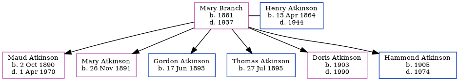

Mary Harper Atkinson (née Branch) 1861 - 1937
[ Home ] | [ Calendar ] | [ Surnames Index ] | [ Family History ]Mary Branch, the wife of Henry Douglas Atkinson (the third cousin twice-removed on the father's side of Nigel Horne), was born in 18611 and married Henry (a station master with whom she had 6 children: Maud Lavinia, Mary E, Gordon D, Thomas Howard, Doris Alexandra and Hammond) in Gloucester, New Brunswick, Canada on Sep 18, 1889. In 1901, she lived in New Brunswick1.
She died in 1937.
Children
- Maud Lavinia was born on Oct 2, 1890
- Mary E was born on Nov 26, 1891
- Gordon D was born on Jun 17, 1893
- Thomas Howard was born on Jul 27, 1895
- Doris Alexandra was born in 1903
- Hammond was born in 1905
Citations
- Canada Census 1901 - Findmypast (was the wife of the head of the household)
Media
Canada Census 1901 - CAN/CENSUS/1901/00561417
Family Tree

Interactive Map
Map
Generated by ged2site. Last updated on Feb 18, 2025